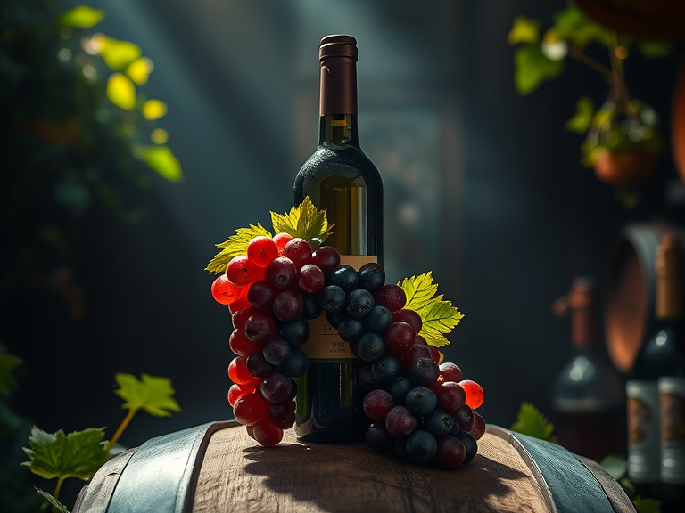
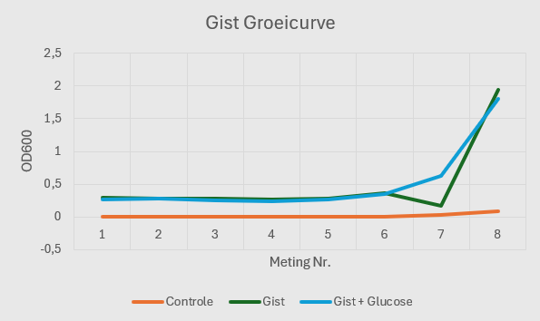
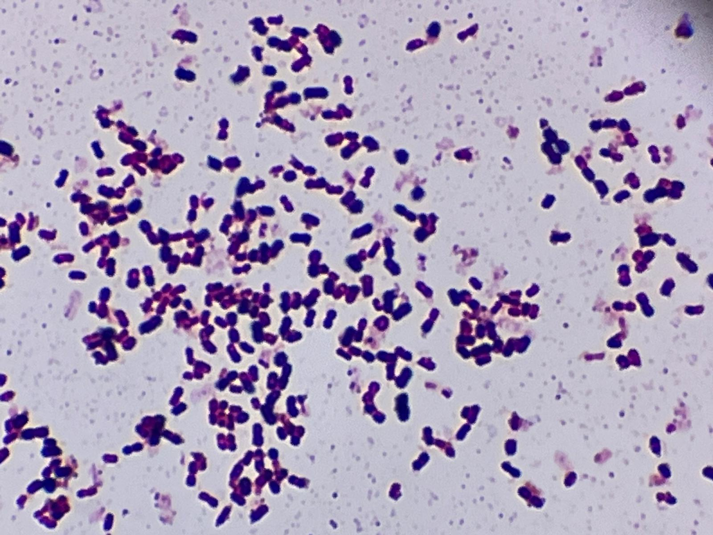

Maak zelf de beste wijn, want de Gall&Gall wilt u niet goed zien.
Met ons fermentatie pakket heeft u zelf controle over uw drank, en kunt u de alcoholische drank maken waar u altijd al van heeft gedroomd.
Wat maakt het jou uit?
Onze DIY wijn kit is ontwikkeld om de magische wereld van fermentatie te openen voor de echte wijnleuten onder ons die graag willen weten wat er nou allemaal nodig is voor zo'n lekker wijntje. Met deze kit kan je jouw eigen identieke wijn maken. Vind je hem te zoet? Doe er minder suiker bij. Is je wijn niet sterk genoeg? Laat hem wat langer fermenteren. Neem het heft in eigen handen en maak jouw perfecte wijn.

Donec dignissim luctus lorem, eu vulputate turpis tincidunt vel. Nam sit amet ex mi. Nam imperdiet consequat bibendum. Fusce blandit arcu nec turpis viverra eleifend. Sed blandit aliquam tellus vel vulputate. Maecenas vitae libero sit amet tellus lobortis sollicitudin sit amet nec velit. Aliquam nisi lectus, lacinia a felis ac, ornare aliquam tellus.
Grondig onderzoek voor de beste kwaliteit
Onze eigen toppers op het lab hebben hun best voor jou gedaan om te kijken of alles echt werkt zoals het zou moeten. Hun vraag was: Wat voor zin heeft het om extra suiker toe te voegen aan jouw fermentatieproces?
Hier naast een grafiek opgestelt uit op ons eigen lab verworven statstieken, over de groei van ons gist. Deze metingen vinden plaats over een week. Uit deze en verdere informatie blijkt dat het toevoegen van extra suiker geen substantiële effecten levert, positief noch negatief.

Geen Besmetting
